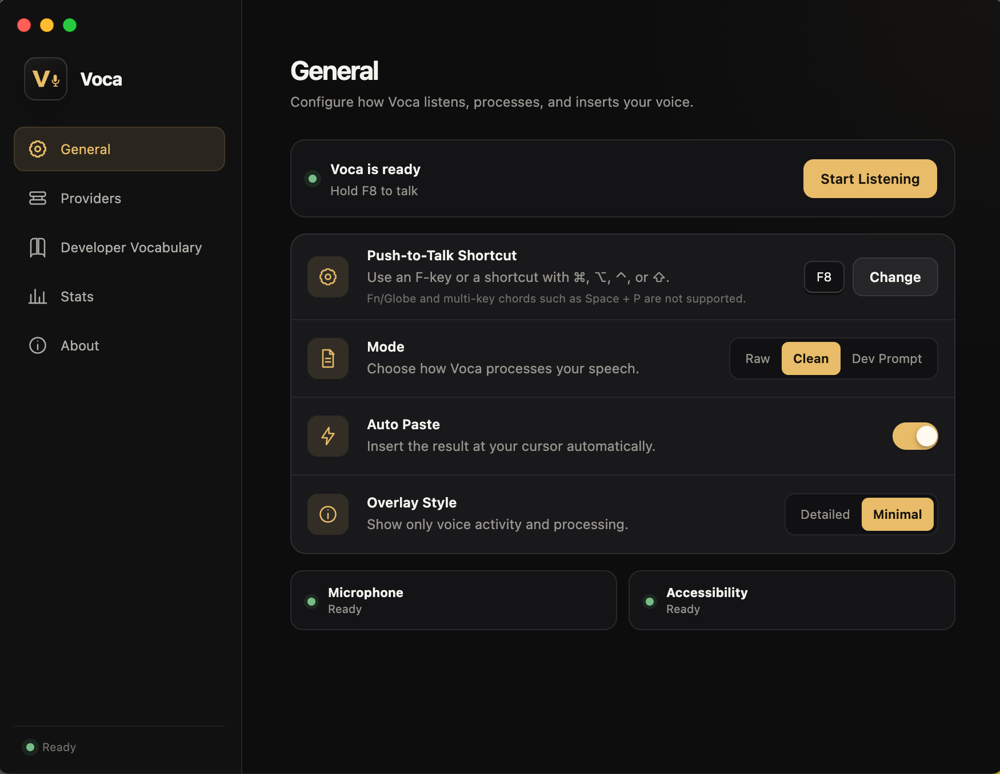
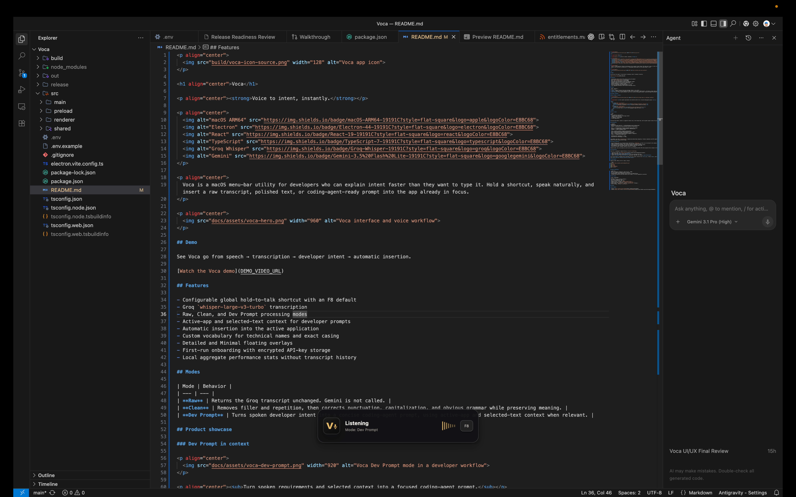
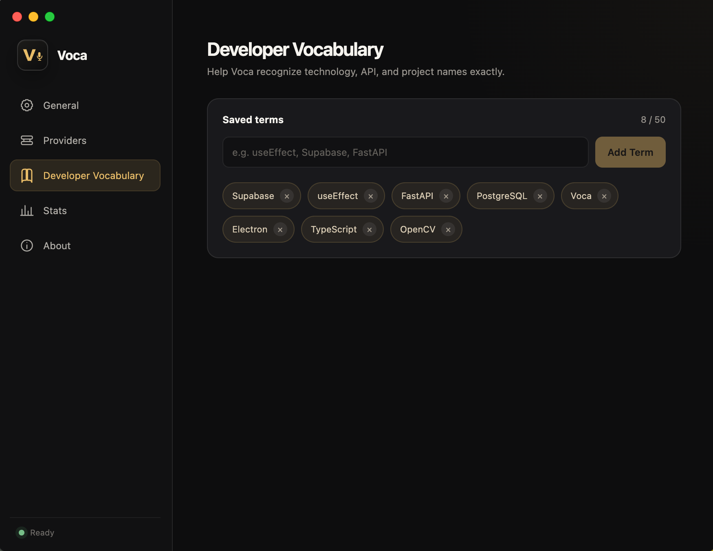
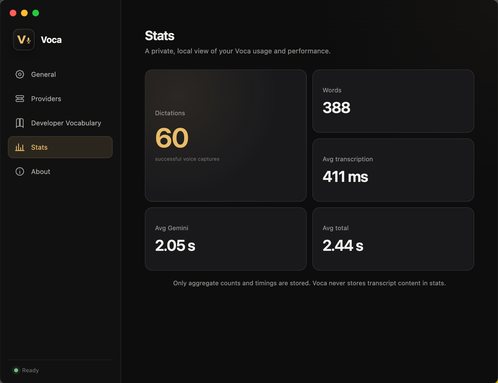

01
Raw
Your speech, transcribed as-is.
Direct transcription from Groq Whisper, without rewriting your words.
Speak naturally. Voca turns your voice into clean text or context-aware developer prompts and inserts the result directly into the app you're already using.

Built beyond basic dictation
Use Raw mode for direct transcription, Clean mode for polished writing, or Dev Prompt mode to turn natural speech and surrounding context into a focused instruction for your coding agent.
Three focused modes
Raw
Direct transcription from Groq Whisper, without rewriting your words.
Clean
Gemini removes filler and repetition while preserving your meaning.
Dev Prompt
Spoken intent, active-app context, and selected text become one structured prompt.
Designed for the way developers work
Voca stays in the menu bar, listens only when asked, and returns the result where you need it.
Uses active-app and selected-text context when it helps clarify your request.
Hold a configurable global shortcut and speak naturally from any application.
Pastes the final result directly into the application already in focus.
Teach Voca technical names, tools, libraries, and exact casing.
Choose a quiet voice indicator or a more informative processing overlay.
Credentials and preferences stay on your Mac. No Voca account or backend.
Dev Prompt
In Dev Prompt mode, Voca combines your spoken request with the active application and selected text when relevant, then turns it into a concise prompt ready for your coding workflow.


Recognition that speaks your language
Add technical names and exact casing so transcription better reflects the tools and terminology you actually use.

Measure without a history trail
Track aggregate dictation counts, word totals, and latency without storing transcript history.
From voice to active application
Raw mode stops after transcription. Clean and Dev Prompt use Gemini. Dev Prompt can also include selected-text and active-app context.
Privacy & security
Voca stores what it needs locally and does not build a transcript history around your work.
Audio, text, and relevant context are sent to the configured Groq and Gemini APIs when required and are subject to those providers' policies.
Voca for macOS
Hold a shortcut. Say what you mean. Keep building.
Requires macOS on Apple Silicon. Groq and Gemini API keys required.
Voca is currently unsigned and not notarized. On first launch, macOS may require you to Control-click Voca → Open, or allow it from System Settings → Privacy & Security.